Professional optometric expertise, personalised attention and contemporary eyewear,
for every patient, family and organisation in Mauritius.
EyePro Optical, a brand of Adams Vision Ltd, is an independent, optometrist-led eye-care practice established in December 2025. It is located at 37 Louis Pasteur, Safar Court Building, Port Louis, Mauritius, and is committed to professional eye-care services in a welcoming, patient-focused environment.
Founded by Shaheen Hossen Saroo, EyePro Optical combines professional optometric expertise, personalised attention and contemporary eyewear solutions, so that every patient feels valued, understood and well cared for.
Our approach goes beyond vision correction: we understand each patient's visual requirements, monitor their eye health and recommend solutions that promote clear, comfortable vision and long-term well-being. From a child's first eye examination to the needs of later life, we provide trusted eye care for every generation.
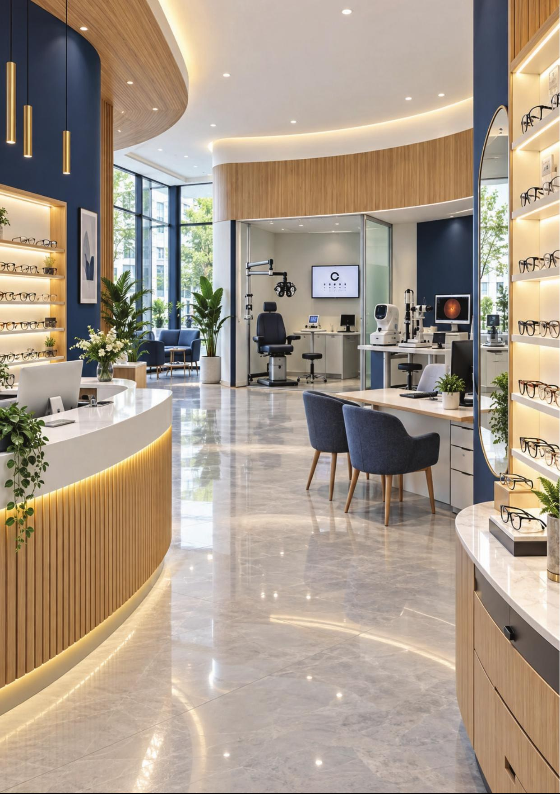
EyePro aims to become one of Mauritius's most trusted and recognised eye-care brands, by improving the patient experience, investing in modern diagnostic technology and expanding its range of quality, stylish and accessible optical products. We also promote regular eye examinations and preventive care through education and community engagement.
A dependable organisation built on professional integrity, consistent service and lasting relationships with patients, employees and business partners.
Embracing modern eye-care technology, introducing contemporary eyewear and continuously improving the patient experience.
Expanding responsibly, strengthening our presence in Mauritius and making quality eye care accessible to individuals and families.
A comprehensive range of eye-care and optical services under one roof.
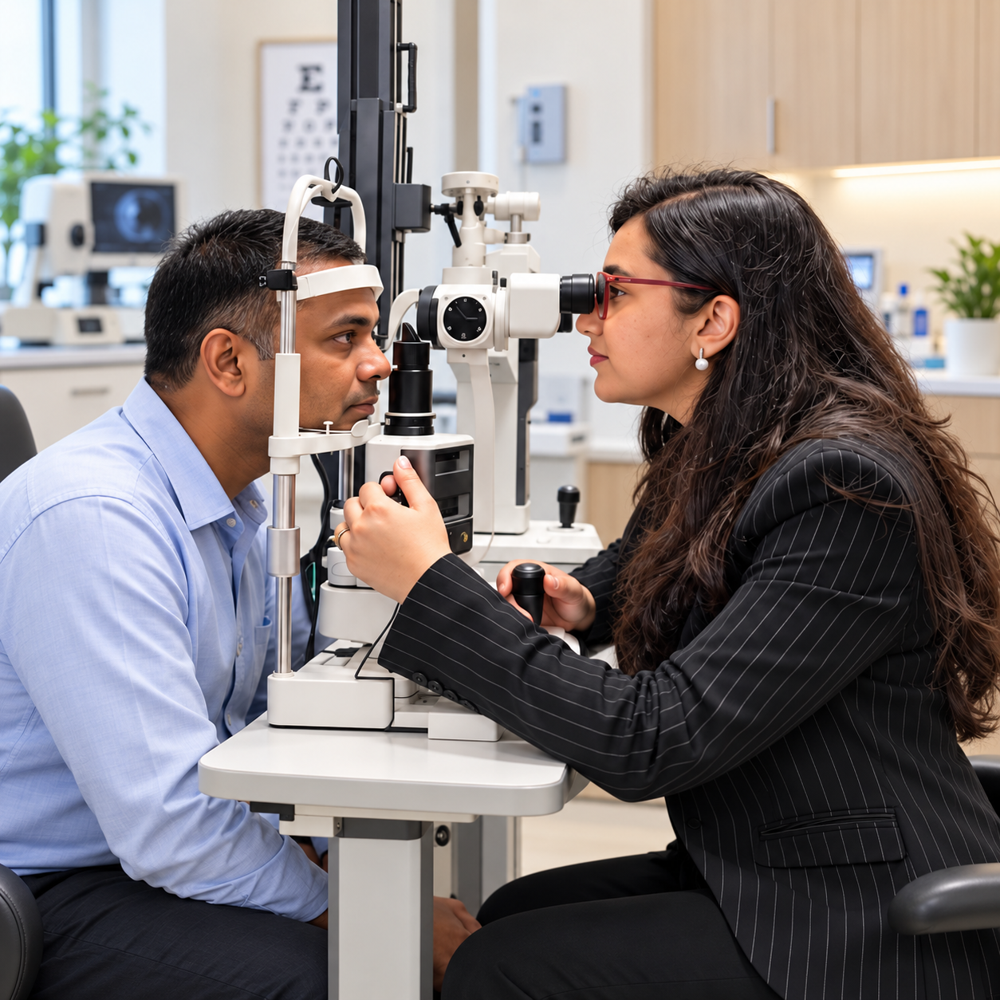
The optical and eye-care market in Mauritius continues to develop as people become more aware of regular eye examinations, preventive care and early detection of vision-related conditions.
Changing lifestyles, greater use of digital devices and an ageing population are increasing the need for professional optometric services. Eyewear has also become an expression of personal style, creating demand for comfort, quality and contemporary design.
EyePro is well positioned to serve children, professionals, families and senior citizens through personalised care, modern expertise and a carefully selected range of eyewear.
EyePro provides tailored corporate eye-care solutions that support employee well-being and workplace performance. Through scheduled eye examinations and vision-screening programmes at offices and other workplaces, we make essential eye care convenient and accessible to your employees.
Good vision supports concentration, accuracy, comfort and safety, particularly for people who use computers, operate equipment or do detailed tasks. Undetected vision problems may contribute to eye strain, headaches, fatigue and reduced efficiency.
Organisations across Mauritius that trust EyePro with their teams' eye care.
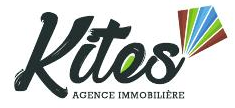
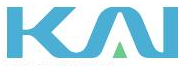
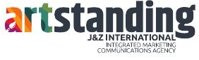
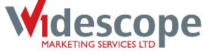
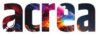
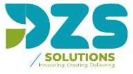
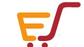
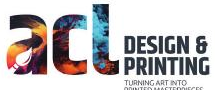
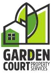
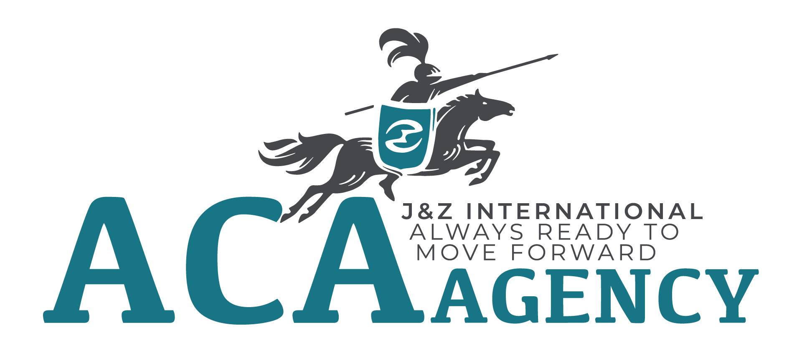
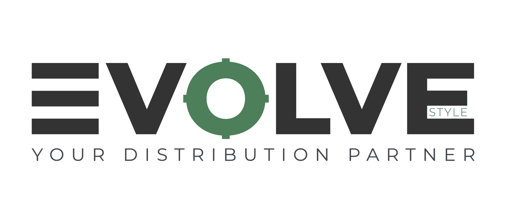
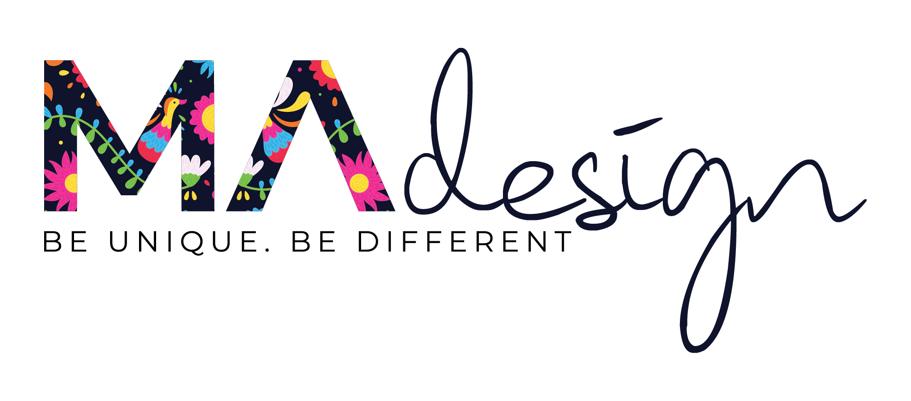
Click a team member to read their profile.
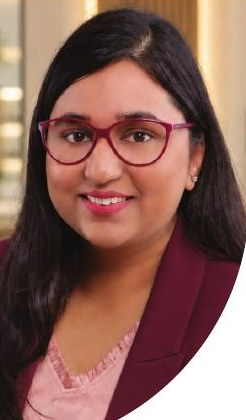
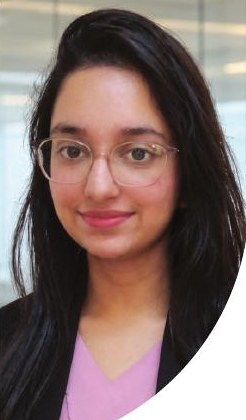
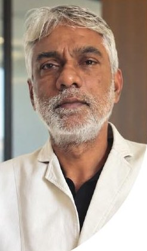
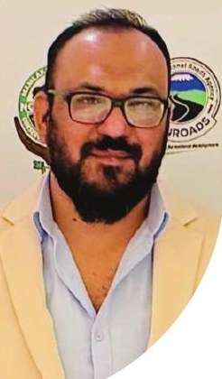
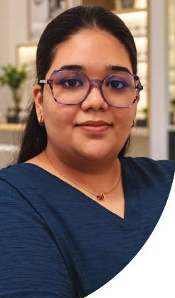
A qualified optometrist with extensive experience in clinical eye care and the optical industry. From 2012 to 2016, Shaheen pursued a Bachelor of Clinical Optometry at the School of Optometry, Bharati Vidyapeeth Deemed University Medical College in Pune, India, graduating with First Class with Distinction, with internships at the Ophthalmology Department of Ruby Hall Clinic and A. Dinshaw & Co. in Pune.
Returning to Mauritius in 2016, she worked with several reputable organisations in the local optical industry and developed strong expertise in optometric care, optical dispensing, contact lenses and personalised vision solutions. She believes effective eye care needs professional guidance, careful attention and a genuine understanding of each patient's needs.
An experienced finance professional with a degree in Accounting and Finance and a background as a Financial Analyst and Tax Executive, in both domestic and offshore environments. She has a comprehensive understanding of financial management, taxation, regulatory requirements, corporate administration and business operations.
As CEO, Farheen provides strategic leadership and oversees operations, performance and organisational development, bringing a disciplined, analytical approach to budgeting, resource allocation, risk management and long-term planning, including the evaluation of growth opportunities and the proposed expansion.
A Certified Accountant and Tax Adviser with 35 years of experience in accounting, taxation and financial management. His international qualifications include AAIA (Association of International Accountants, UK), AIPA (Institute of Public Accountants, Melbourne), IFA (Institute of Financial Accountants, UK) and FIAB (International Association of Bookkeepers, UK).
At EyePro, Mr Gauzee advises on accounting, taxation, financial compliance and regulatory matters, supporting accurate records, statutory compliance and sound financial practices aligned with the company's growth objectives.
An accomplished Creative and Art Director with more than 20 years of experience at one of Mauritius's leading advertising and marketing agencies, with a multidisciplinary background in branding, marketing, business and finance, and experience in Mauritius and South Africa. A recipient of multiple local and international awards, he has worked on major branding projects for brands such as Absa, Pepsi Africa and GWM, and was the creative visionary behind the official mascot of the 2019 Indian Ocean Island Games.
He founded Artstanding J&Z International in 2020, operating across Mauritius and Tanzania. As EyePro's Marketing Consultant he guides brand positioning and visibility, with Artstanding J&Z managing EyePro's marketing from brand strategy and campaigns to creative direction.
Responsible for sales at EyePro Optical and a key point of contact for clients. Saniyya assists with enquiries, presents the eyewear collections and guides customers towards products that suit their visual requirements, personal style and budget.
She also supports the smooth coordination of daily sales activities, product presentation and after-sales service, helping EyePro build lasting relationships and customer loyalty.

“What began as a father's vision has become a daughter's purpose.”
The foundation of Adams Vision Ltd traces back to a vision first expressed in 2011 by the late Adam Hossen Saroo for the professional future of his daughter, Shaheen Hossen Saroo. The company's name honours him and the lasting influence of his vision, and EyePro Optical was developed as its dedicated eye-care brand, built on professional expertise, strong values, determination and a commitment to serving the community.
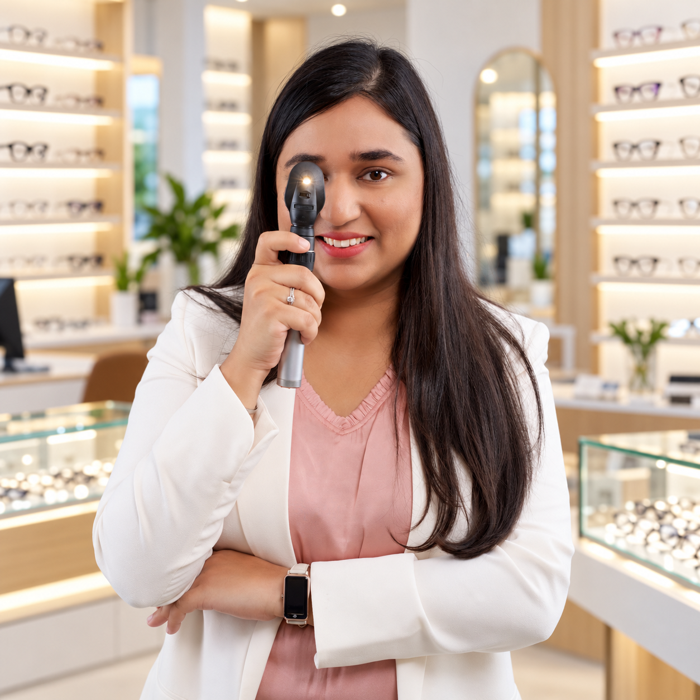
As part of its long-term growth strategy, EyePro Optical is considering opening two additional outlets between 2027 and 2028, extending its geographical presence and making professional eye-care services more accessible across Mauritius. Locations will be guided by market analysis, customer demand and suitable commercial opportunities, with a strong focus on consistent professional standards and patient experience at every outlet.
Each modern outlet will offer a comfortable, efficient customer journey, from consultation and eye examination to frame selection, fitting and after-sales support, with modern optometric technology and attractive product displays.
Welcoming, professionally designed outlets that combine advanced eye-care services with contemporary eyewear retail, and a consistent brand experience across every location.
Eye-health awareness campaigns, vision screenings and partnerships with schools, businesses and charitable organisations, with particular attention to children, elderly persons and people with limited access to eye care.
Book an eye examination, ask about eyewear or request a corporate eye-care programme for your team.
Phone5 253 12 02 / 218 82 65
Address37, Louis Pasteur St, Safar Court Building, Port Louis (Near Citadelle Mall)